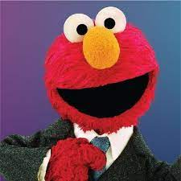
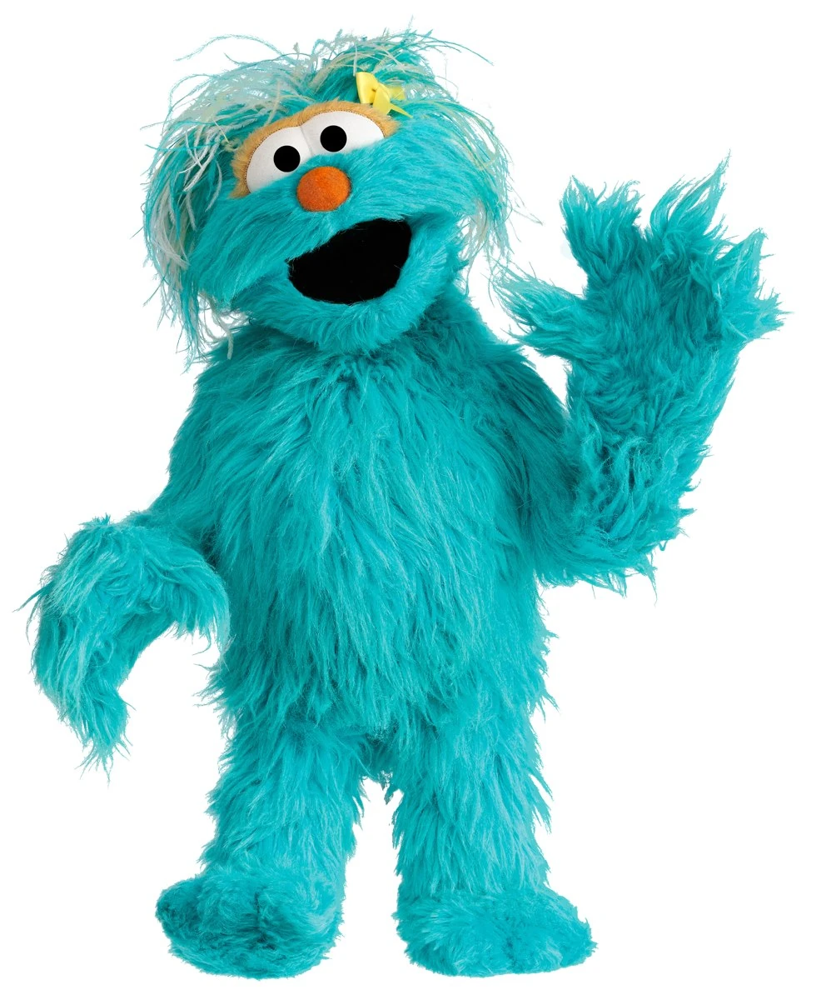

Happy Birthday to SpongeBob!!
-
Krabby PattyBikini Bottom - 2hCraving a delicious treat? Look no further than the legendary Crabby Patty! Bursting with flavor and served with a side of nostalgia, it's the ultimate indulgence.
-
Bob's BirthdaySpongeBob - 2hHappy Birthday to myself! So proud of having soooo many friends!123k Tweets
-
Bob's BirthdayStar PatrickHappy Birthday to myself! So proud of having soooo many friends!123k Tweets
-
Krabby PattyKrab - 2h123k Tweets
- Who to follow
-
Elmo@Elmo.SesameStreet
-
Grover@Grover.SesameStreet
-
Big Bird@BigBird.SesameStreet
-
Kermit the Frog@Kermit.SesameStreet
-
Rosita@Rosita.SesameStreet